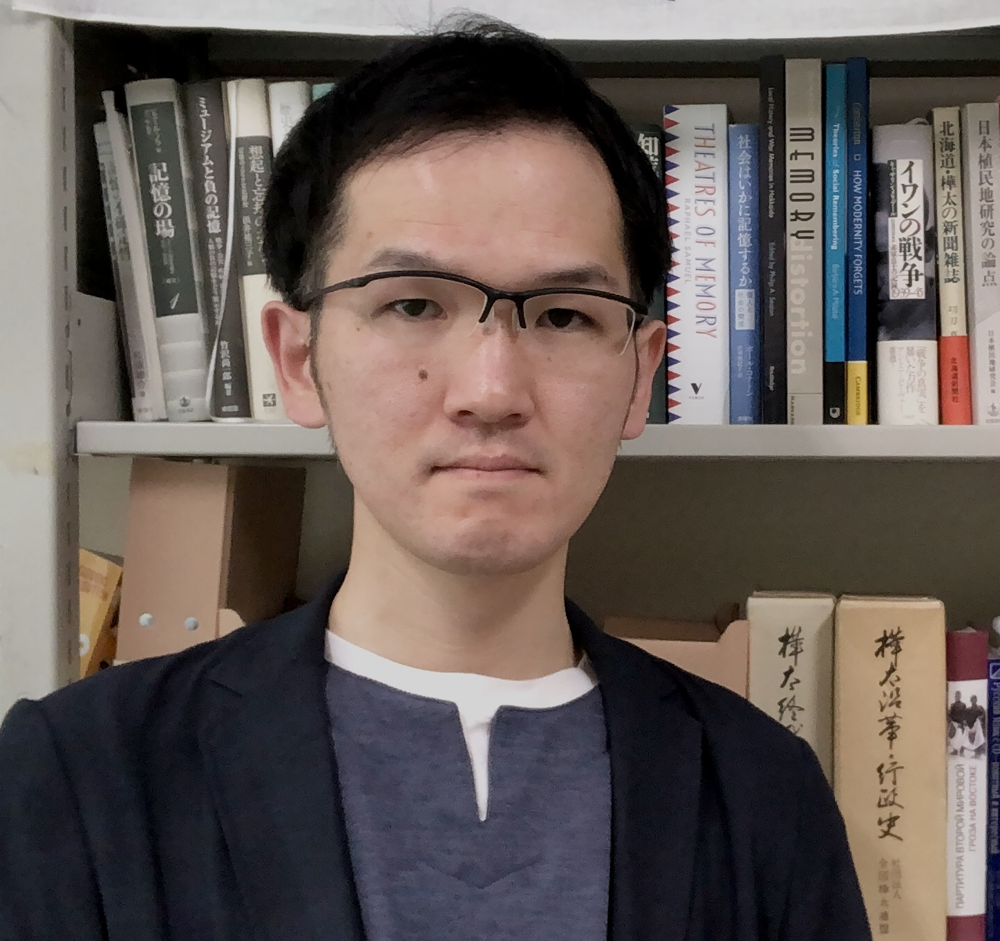

近年、文化遺産の社会的・経済的価値が注目されるようになり、観光・教育資源としての活用も全国各地で進んでいます。しかし、それらは初めから「文化遺産だった」ものではなく、いずれも「文化遺産になった」ものです。このように、文化遺産を社会的な力学の中で形成されるものと捉えるのがCritical Heritage Studiesのアプローチであり、私もこうした視座を基本に置いて研究を進めています。
そこで重要になるのは、文化遺産に関わる「人」、特に所在する地域の住民や関係者の方々です。文化遺産の価値をめぐっては、時に関わる人々の間に対立関係も生まれます。文化遺産の価値を解きほぐしつつ、そこに人々の共通理解をどのように生み出せるか。また、その代表的な活用策である「観光」は、共通理解の形成にどう関与できるか。これらの点を、特に産業遺産に注目しながら研究しています。
こうした研究は、「なぜ文化遺産が大事なのか」という根本的な議論から、「どのように活用していくことが望ましいのか」という実践的な議論にまで援用することが可能です。
関係者の協働に基づく文化遺産の価値形成
地域社会が主体となる文化遺産の保存活用のあり方の検討
地域の歴史文化を活かした観光まちづくりの方策の提示
「地域遺産」制度の展開可能性についての提言
これまで北海道と京都を中心に、「北海道遺産」の展開の支援、日本遺産「炭鉄港」を活かした地域活性化戦略の検討、特別史跡五稜郭跡の保存活用計画の策定などに携わってきました。会議での学術的知見の提供だけでなく、ワークショップの企画運営や、学生とのフィールドワーク・調査にも取り組んでいます。

文化遺産の保存活用・観光まちづくり・地域遺産に関するご相談を承っています。